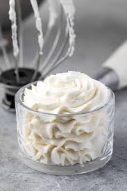

Homemade Whipped Cream

Vanilla whipped cream for cream puffs
This easy recipe turns your Pate a choux into a delectable dessert, cream puffs!
Ingredients
- 1 cup (240 ml) cold heavy cream or heavy whipping cream
- 2 tablespoons confectioner's sugar or grandulated sugar
- 1/2 teaspoon pure vanilla extract
Steps
- Using a hand mixer or a stand mixer fitted with a whisk attachment, whip the heavy cream, sugar, and vanilla extract on medium-high speed until medium peaks form, about 3–4 minutes. Medium peaks are between soft/loose peaks and stiff peaks, and are the perfect consistency for topping and piping on desserts. If you accidentally over-whip the cream, and it looks curdled and heavy, pour in a little bit more cold heavy cream, and fold it in gently by hand with a spatula until it smooths out.
- Use immediately or cover tightly and chill in the refrigerator for up to 24 hours. Freezing prepared whipped cream sometimes causes it to lose its creamy texture, but it definitely works.
Image credit: Crazy For Crust
Recipe credit: Sally's Baking Addiction